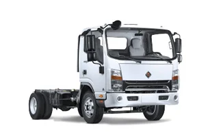
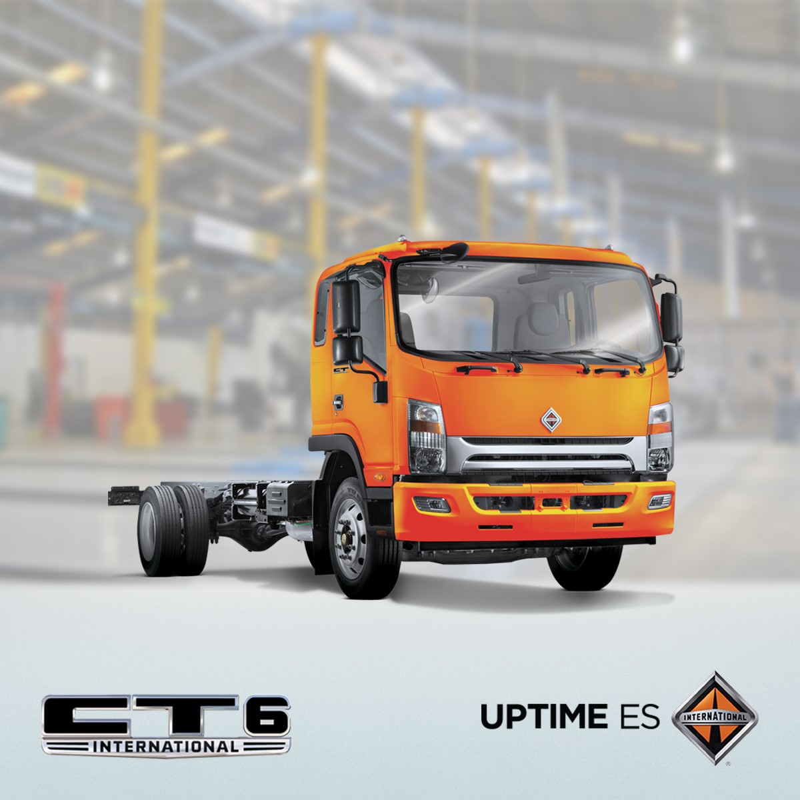

Los camiones de carga más populares en la industria.
En la industria del transporte de carga pesada, los camiones juegan un papel vital. Una marca reconocida por su fiabilidad y rendimiento es International. Con una amplia gama de camiones de carga pesada en su línea de productos, International ha ganado una reputación sólida en todo el mundo.
En este artículo, exploramos los modelos más populares de camiones ligeros, medianos y severos de la marca International.
En este artículo, exploramos los modelos más populares de camiones ligeros, medianos y severos de la marca International.
Camiones de carga ligeros Internacional
Los camiones Internacional de carga ligera destacan por su potencia excepcional, gracias a sus eficientes motores diésel Cummins. Está diseñado para soportar cargas de 3.5 a 7 toneladas y cuentan con cabina ergonómica ofrece una visibilidad óptima y una amplia maniobrabilidad.
CT4: Camiones chatos ligeros con capacidad de transportar hasta 4 toneladas, mayor poder que una camioneta y mejores resultados para tu negocio.

CT5: Camiones ligeros con sistema de frenos antibloqueo, bajo costo operativo y capacidad de hasta 5 toneladas, una unidad única en su tipo.
CT6: Camión pequeño pero poderoso, su capacidad de carga de hasta 7 toneladas y gran potencia lo convierten en líder del mercado
